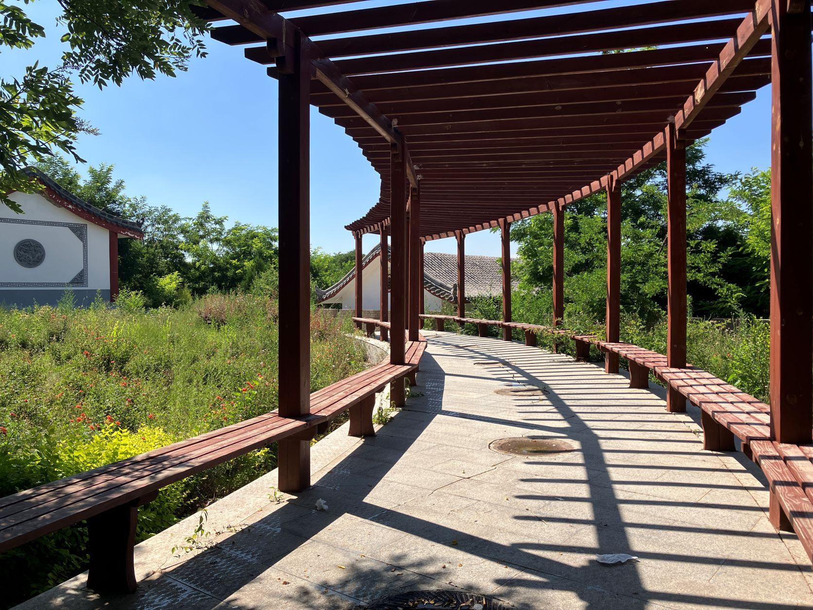
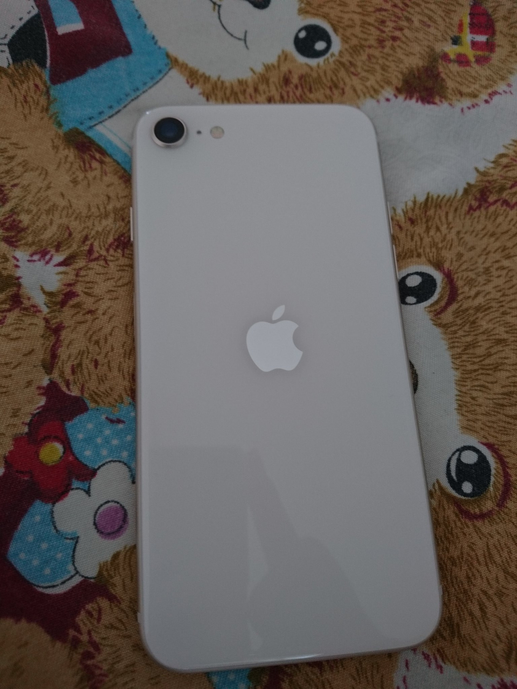
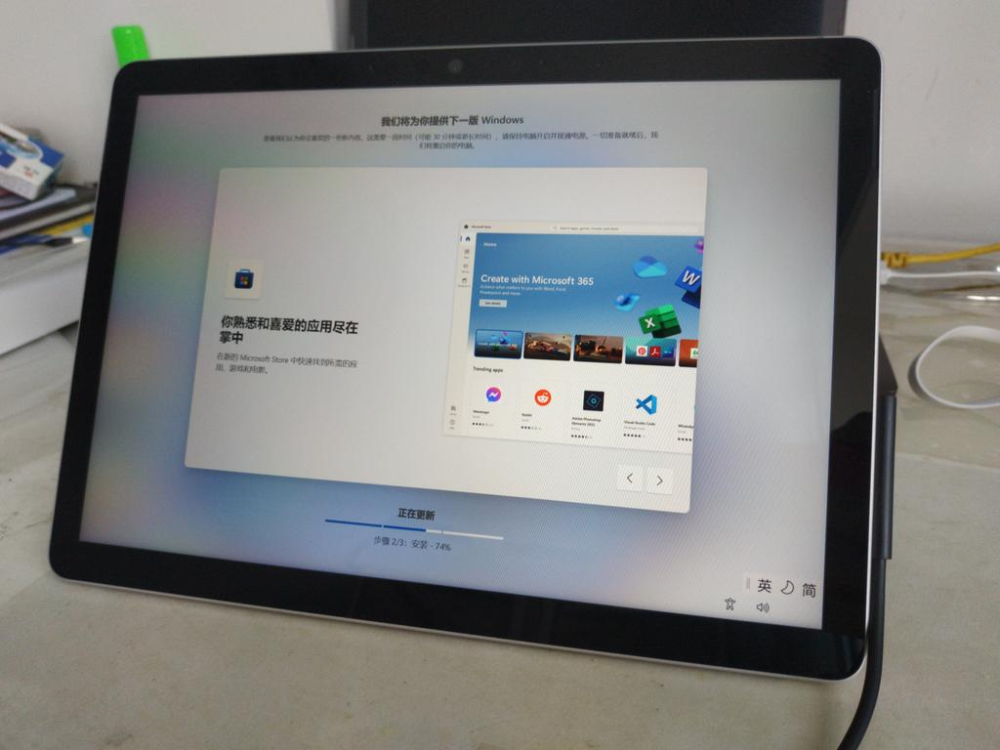
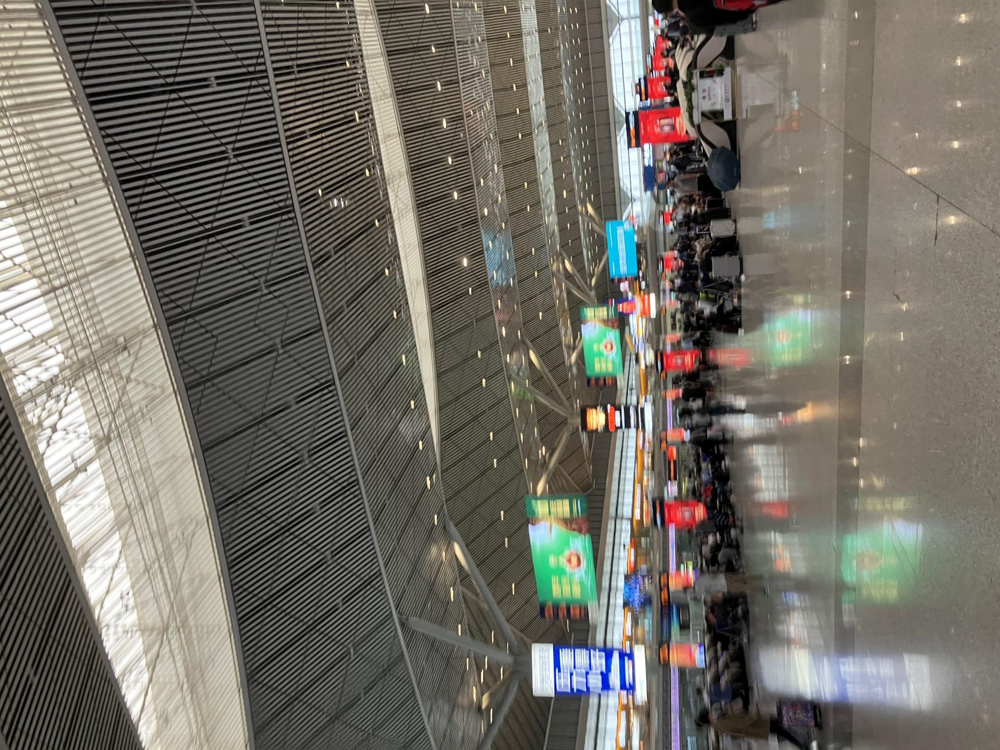
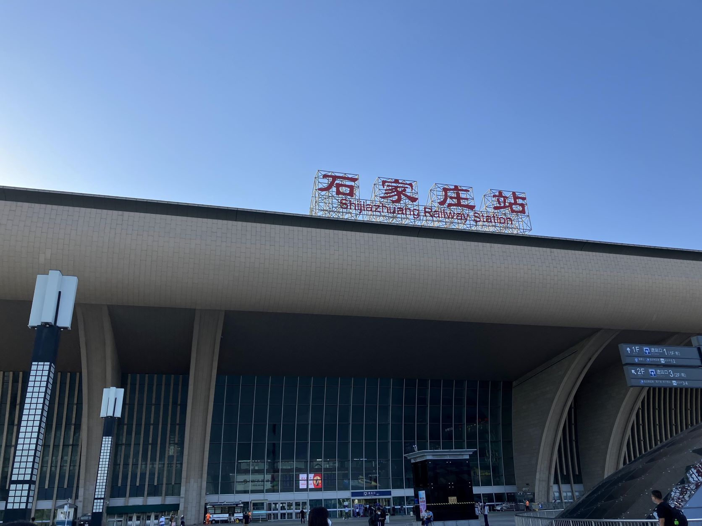
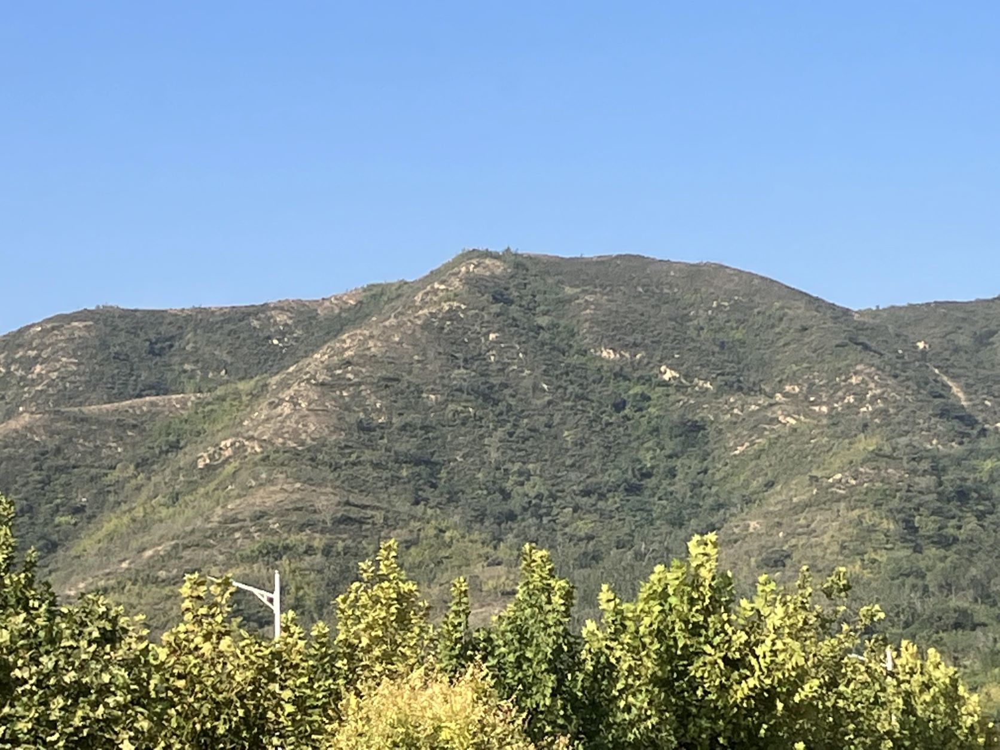
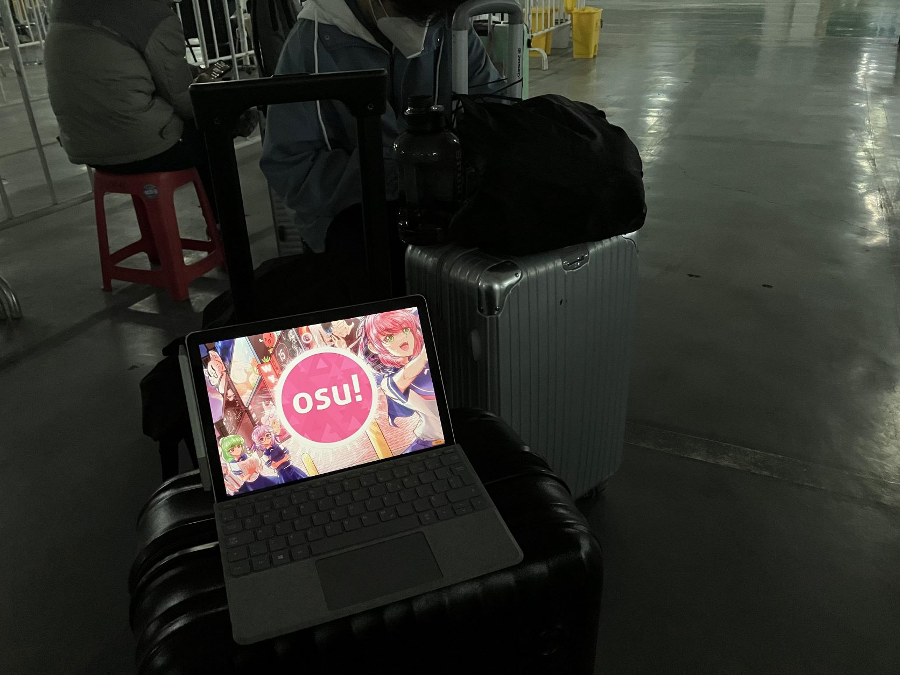

这篇回顾本来是新年就开始写的，当时总是感叹真是不可思议的一年，AI绘画与聊天机器人的爆发，俄罗斯入侵乌克兰，防疫政策逐渐严格变得荒诞再到突然结束，全国多地爆发的群体抗议活动…稍微有点感觉不太真实，各种各样的东西在脑中冒出，却又不知道从哪里开始。最后拖到了现在，还是回顾一下自己吧。
2022年的前半年主要是在高考复习中度过的，中间短暂的因为防疫政策中断过一次线下课程。在中国农村的高中的高考复习，日常大概只有做题，讲题，考试，排名。遇到了个麻烦事情多的年级主任，搞了一堆意义不明的形式主义的活动，但是为了不给自己添麻烦只能照做。累吧，在学校的时间都是安排满的，不过压力和现在相比我也不知道哪种更大。平时的状态不知道是麻木还是大脑放空，所有的事情跟着照做就行了。我是走读生，学校也没有过于压榨学生（虽然不可避免的周六上课），回家还是能摸鱼时就尽可能摸鱼的。我看了不少动画，还读了些轻小说，然后买了一些奇怪的电子套件和电烙铁半夜3点在自己房间焊接，逛社交网络。到了临近高考的那一段时间，也是日常带着我的卡片相机在学校乱拍，记录也并不美好的剩余高中生活。学校就是考场，临近高考前一周放假，也只是每天在家里放肆的玩，好多东西其实我也不确定…还要感谢 Blockcity 在高考前发给我的学习资料和笔记，我在上考场前一天和前几个小时才急了翻出来看，应该还是起到了作用的。

等待成绩，享受假期，确实是什么也没有做。最后只能算是成绩符合平时的学习情况（笑）。当地的填报志愿是先选学校再选择专业，因此为了确保能学计算机类专业，以及想着要离家远没人管，我就将我现在就读的这所学校填在了第一位，后来才知道这种情况挺少的，或许我可以选择上更好的学校的，而且我校确实生活环境各方面都挺一般，但可以凑合吧，已经这样了，就也不去想这些。
之后就是和我其他的暑假没什么不同的暑假（当然没有假期作业）。本来计划去青岛，但是时间没有安排好错过了亲戚家的顺风车，又计划去省会玩几天，结果碰上了严格防疫政策也没去成。就去乡下待了几天，乡下几乎没有网络确实挺痛苦的。然后和往年一样，堂弟来我家玩了几天，一起看动画玩游戏这样，每一天都差不多，什么也没有学，什么也没有做，很快就糊弄过去了。

在这期间购入了人生第一部…贵重的电子产品… iPhone SE 3 。想着体验iOS，以及购买世界上可能是最后一部使用16:9屏幕的手机，就购买了。现在回忆还是有后悔的，iOS并没有想象中的稳定，A15的性能也完全没法发挥，各种Android下习惯的东西没有办法使用，让手机回归简单的工具这点确实做到了，只用它来做些简单的事情……然后我仍然日常多带另一部手机来做其他复杂的事情，笑。不过蠢也好冲动消费也好，我现在仍然在使用它，也算是有趣的体验吧。小巧的机身，精致的外观，还是能够捏在手上欣赏的，拍照和外放也挺棒的，至于电池？我现在从来不敢把它用到40%以下再出门。

然后是另一台贵重电子产品…微软 Surface Go 3 。同样是令人有些后悔购买的设备…当时的选择在加钱买iPad Air 5和减钱买Galaxy Tab S7 FE之间，但是碰巧微软商城有官翻 Surface Go 3，抱着试试现在的Windows平板怎样？应该差不多吧，这样轻率而幼稚的想法，购置了可能会连续恶心我好几年的电子产品。其实还是能用的，作为可拆卸键盘的小尺寸轻薄本确实挺不错的，可惜我需要的是平板电脑。各种各样的问题…包括被我弄坏了两根 Surface Pen ，容易脏的键盘盖，不耐用的金属后盖，Windows缺乏平板使用适配，不过和上的大学一样，既然买了就用吧。不过Windows 11实在是吃力，我现在换成了Fedora，虽然没法改变这个设备，但稍微能反应快一点。
不出意外的拿到录取通知，订高铁票被两次停运，然后不出意外的开始线上教学，持续了半个月，刚开始还是有点信心的，然后很快就没了，一开始就听不懂的高数现代，其间加入了学校的算法竞赛社训练，认识了几位好朋友，当时稍微有点信心，然后在年底发现这些确实不太适合我就跑路了。除此之外还是和暑假差不多，糊弄了多半个月后返校了。


第一次出远门，坐高铁去从来没有去过的城市，似乎也没有什么特殊的感觉…不知道未来是怎样的？有点累的，糊里糊涂就踏上了旅程…独自生活，各种各样的事情都要自己来做，现在还能回忆起因为缺乏计划带来的麻烦，上下楼到处跑的狼狈模样…不过遇到几次麻烦之后也有了经验，似乎一切又开始走向正轨。稍微有点震惊于自己适应新环境的速度，接着就是没有什么不同的日常。不过需要整天打开着IM来随时接收消息。

大一的课不算多，不过压力和焦虑并没有因为更宽松的时间安排变得减轻，在学校期间真正坐在教室老师来上课的时间也不多…一出站就坐车去学校，然后从来没有出过校门…这点也挺令人烦的，虽然我不喜欢出门但是不允许出和不想出是不同的。超级频繁的核酸检测，以及到了后一个月这边快递彻底停运…各种各样的其他负面情绪，总之感觉相当糟糕，但也凑合吧。在此期间认识了位朋友，大概约在学校餐厅一起吃过一次饭，然后和室友们从只能网上聊天发展到了现在一起上课路上聊今天的天气。
基本上没什么不同的日子过了不到两个月，就被学校赶回家了，理由还是防疫政策，通知了之后就立刻订票离开，收拾东西，熟悉的高铁，然后在西安北站被扣下，之后半夜被用救护车押运回家。

继续在家过着类似浑浑噩噩的网课生活，睡觉，吃饭，摸鱼，赶着DDL交作业，焦虑，沉迷互联网，终于到了考试，还是考前的几个小时前看了看突击的课程视频，最后期末题也简单，就勉强及格了。紧接着这不可思议的，魔幻但也普通的一年，就在摸鱼当中，糊里糊涂的结束了。
虽然真是不可思议的一年，但是想一想，大多数情况下的每天都没有什么不同…压力焦虑仍然存在于那里，日常琐事还是在不断的打扰着我，不过还是往积极的方向来结束，12023年，人类加油？